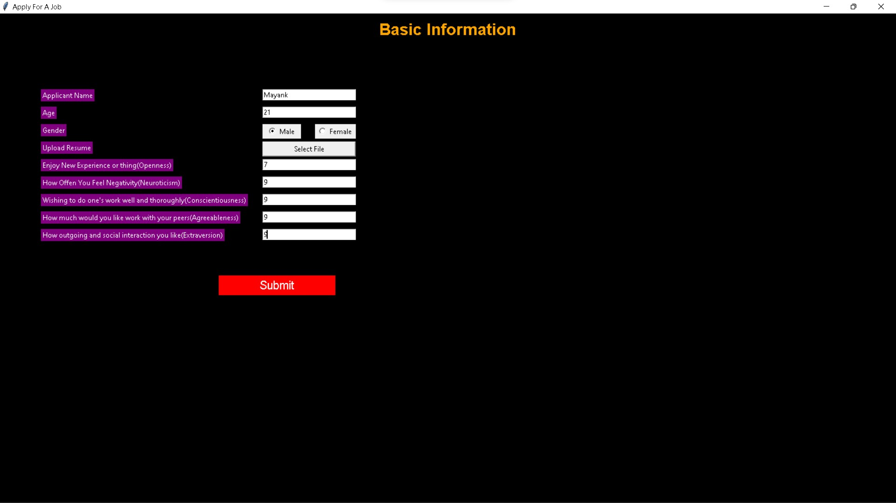

This is a description about the projects i have done
Gps logger for ministry of environment forest and climate change
Dugongs are a keystone and critically endamgerd species and are very few left in our oceans so there was a need to create a device for the conservation of dugongs
sanctury which was demanded by the wildlife institute of india. We created an IOT device which helped in creating indias first dugoong sanctuary in Tamil Nadu.
GPS stands for global positioning system it takes help of the satellites and it logs the position of device at regular intervals in its memory thus creating a trace where
the boat has travelled and the devices are given to the fishermen who carry them around in the waters, they are also given a data sheet where they can note the time
stamp of sighting of a dugong and now with these we have the location of dugong and the data is gathered where is the location of the species so they can be protected.
The components used in this project are Node MCU ESP 8266 it connects the objects and lets data transfer using the Wi-Fi protocol EM-406 Gps Receiver which
determines the location of satellites and a Neo-6M GPS chip it can track up to 22 satellites and 50 channels and achieves industries highest level of sensitivity.
.jpg)
Personality Detection app from CV using python(HIRING HACK)
Hirring Hack is a personality prediction app on the basis of Lewis Goldbergs theory of OCEAN it uses NLP(natural language processsing) for the pridtion of persona;ity on the ocean basis.

A finance managment applixaton using c(MY POCKET MANAGER)